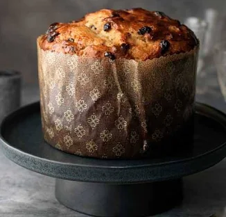

Risotto alla milanese

Il risotto alla milanese è il piatto simbolo della cucina lombarda, famoso in tutto il mondo per il suo inconfondibile colore dorato e la sua consistenza cremosa. A differenza del classico risotto allo zafferano, la ricetta tradizionale milanese esige l'utilizzo del midollo di bue, che dona al piatto una ricchezza e una profondità di sapore uniche.
Scopri ricetta
Cotoletta alla milanese

La cotoletta alla milanese originale è uno dei secondi piatti simbolo della cucina italiana, caratterizzata da una costoletta di vitello con l'osso, impanata e fritta rigorosamente nel burro chiarificato.
Scopri la ricetta
Panettone

Il panettone è il celebre dolce natalizio italiano nativo di Milano, famoso per la sua tipica forma a cupola e la consistenza soffice e alveolata. La sua ricetta tradizionale prevede un lungo processo di lievitazione naturale con lievitato madre (che può durare diversi giorni) e un ricco impasto arricchito con uvetta, arancia candita e cedro.
Scopri la ricetta